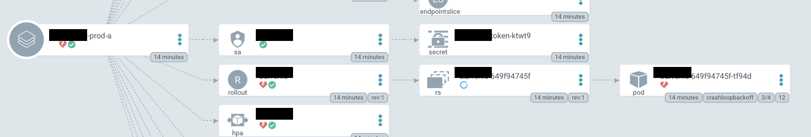
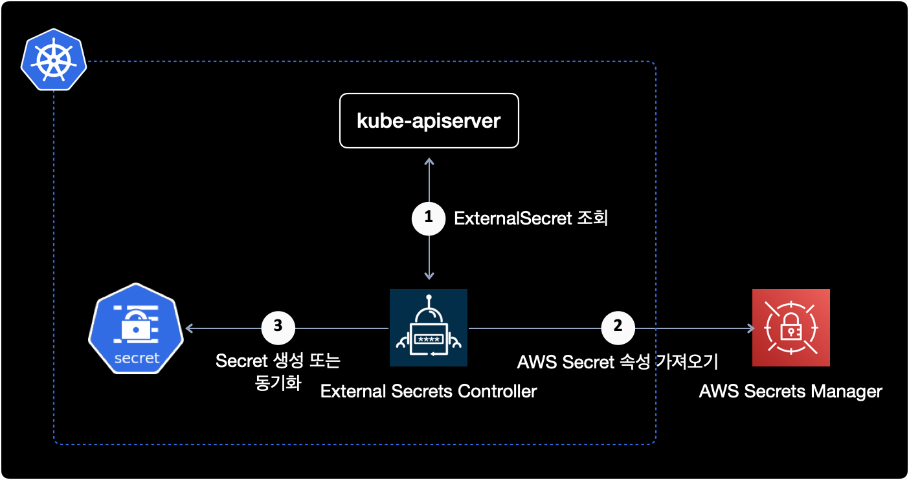
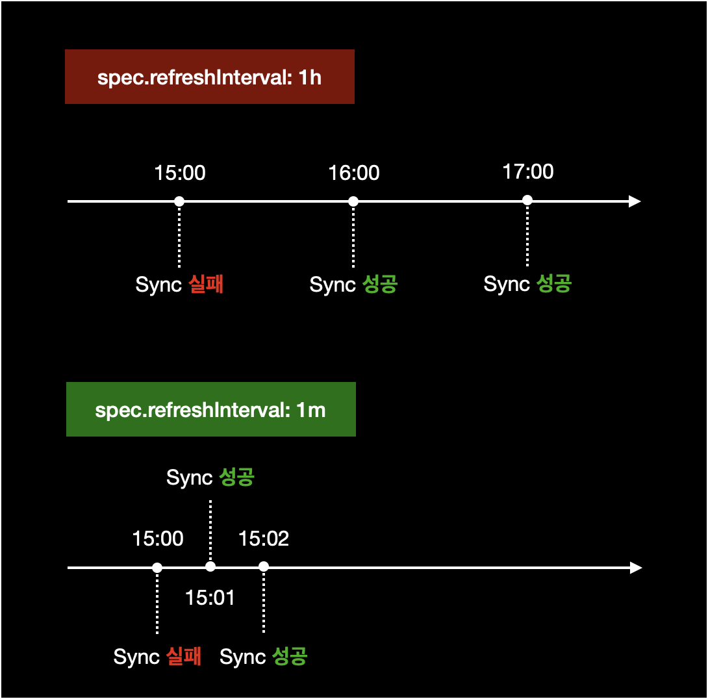

external secret의 최초 동기화 실패 해결방법
개요
External Secrets v0.4.4를 사용할 경우, 설정과 구성에 전혀 문제가 없더라도 무조건 최초 동기화에 실패하는 버그가 있습니다.
이에 대한 트러블슈팅 가이드입니다.
배경지식
External Secrets Operator
쿠버네티스의 External Secrets Operator는 쿠버네티스 클러스터 외부에 위치한 시크릿 매니저(예: AWS Secrets Manager, HashiCorp Vault)와 통합하는 기능을 제공합니다.
보안 상 중요한 정보들을 저장하는 것은 매우 중요한 일입니다. 일반적으로 이러한 정보는 외부 시스템에 저장되며, 이를 쿠버네티스에서 사용할 수 있도록 가져오는 것은 쉽지 않은 일입니다. 이 때 External Secrets Operator를 사용하면 외부 시스템에서 시크릿 정보를 안전하게 가져와서 쿠버네티스의 파드, 컨테이너 등에서 사용할 수 있습니다.
External Secrets Operator는 쿠버네티스의 Custom Resource Definition(CRD)를 사용하여 외부 시크릿 매니저에서 시크릿 정보를 가져오는 방법을 정의합니다. 이 CRD를 사용하여 쿠버네티스 오브젝트(예: Pod, Deployment)에서 시크릿 정보를 참조할 수 있습니다.
이를 통해 시크릿 정보를 쿠버네티스 클러스터 환경에서 쉽게 관리할 수 있으며, 보안성도 높아집니다.
증상
EKS 클러스터에 External Secrets v0.4.4 버전을 배포해서 사용 중입니다.
External Secrets을 ArgoCD에 배포했을 경우 처음 한 번은 무조건 Sync 실패가 발생하는 버그가 있습니다.
$ helm list -A -f 'external-secrets'
NAME NAMESPACE REVISION UPDATED STATUS CHART APP VERSION
external-secrets external-secrets 2 2022-05-10 11:13:09.719108 +0900 KST deployed external-secrets-0.4.4 v0.4.4
아래는 ArgoCD에서 문제가 발생한 Application을 확인한 화면입니다.

아래는 ExternalSecret에서 발생하는 에러 메세지입니다.
Operation cannot be fulfilled on secrets "sample-application-name-here": the object has been modified; please apply your changes to the latest version and try again
ArgoCD에서 Application을 배포하면 External Secret에서 위와 같은 에러 메세지가 발생하며 AWS Secret과 싱크에 실패합니다.
ArgoCD의 application은 degraded 상태가 됩니다.
환경
- External Secrets
v0.4.4
External Secrets 배포는 헬름 차트 v0.4.4를 사용했습니다.

클러스터 외부에 있는 AWS Secrets Manager의 Secret을 사용하기 위해 External Secrets를 EKS 클러스터에 배포한 구성입니다.
- EKS v1.21
- EC2 Managed Node로 구성된 EKS 클러스터
원인
External Secrets v0.4.4에서 발생하는 버그입니다.
해결방법
근본적인 해결방안
근본적인 해결방법은 External Secrets 릴리즈를 v0.4.4에서 최신 버전으로 업그레이드하면 됩니다.
대안
하지만 여러가지 이유로 External Secrets 버전 업그레이드가 불가능한 상황일 경우, External Secret의 spec.refreshInterval 설정을 수정해서 싱크 문제를 해결할 수 있습니다.
ArgoCD에 Application을 배포할 때 External Secrets 리소스의 spec.refreshInterval 주기를 기본값 1h보다 더 짧게 설정합니다.

문제가 발생한 ExternalSecrets의 yaml 파일입니다.
apiVersion: external-secrets.io/v1alpha1
kind: ExternalSecret
metadata:
...
spec:
refreshInterval: 1h
...
spec.refreshInterval 기본값은 1시간(1h)입니다.
spec.refreshInterval 설정을 1h에서 1m으로 변경합니다.
apiVersion: external-secrets.io/v1alpha1
kind: ExternalSecret
metadata:
...
spec:
# Change `refreshInterval` 1h to 1m.
refreshInterval: 1m
...
refreshInterval 값을 수정한 후 ArgoCD에 재배포하면 정상적으로 싱크된 걸 확인할 수 있습니다.
$ kubectl get externalsecrets.external-secrets.io \
-n your-namespace
NAME STORE REFRESH INTERVAL STATUS
testweb-testweb-cred secrets-manager 1m SecretSynced
testweb-datadog-env secrets-manager 1m SecretSynced
testweb-fluentbit-cred secrets-manager 1m SecretSynced
상태값이 SecretSynced로 변경된 걸 확인할 수 있습니다.
참고자료
API specification
External Secrets Operator v0.4.4의 API 스펙 공식문서